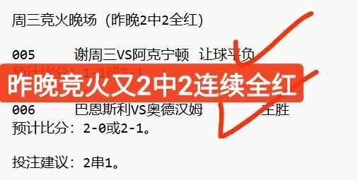
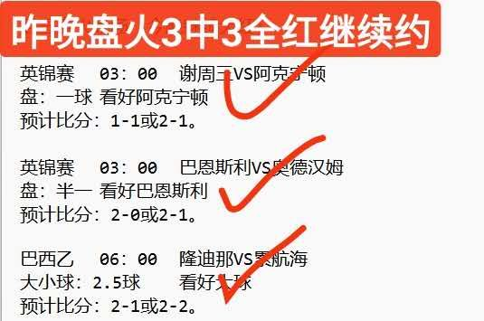
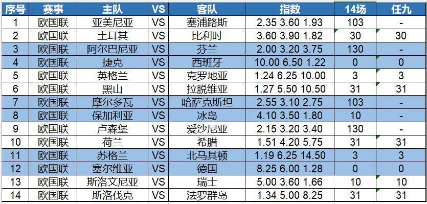

昨晚竞火2中2全红，盘火也是3场全红，今晚继续约！欢迎打赏支持原创！


安卓手机请安装APP，苹果手机收藏首页

今天14场时欧国联小组赛第5轮，小组赛即将结束，要根据晋级和保级形势，对各球队的战意进行分析。
宝哥还是先给大家说一下欧国联小组赛的规则：
共分为四个级别，A、B和C每个级别包括4个小组，D包括2个小组。
A级各小组的第一名和第二名晋级1/4决赛（主客场两回合），胜者进入第二年6月集中的决赛圈争夺冠军。
B、C、D级别的小组第一名获得直接升级资格。
A、B级别的小组末位直接降级（A级小组第四名自动降入B级）。
各级别之间设置了附加赛来决定名额归属（如A级第三名与B级第二名、B级第三名与C级第二名进行主客场附加赛）。
既要争夺小组前两名去冲击欧国联冠军或八强，又要极力避免小组垫底降级。因此A级中游和保级生死战的竞争往往比单纯的头名争夺更激烈。
今天第一场关注欧国联小组赛，英格兰主场迎战克罗地亚。这个小组由于世界杯冠军西班牙的存在，世界杯季军英格兰只有争夺第二名的份儿。已经打完的4场小组赛，英格兰3胜1负，顺利拿到了所有能拿到的分数，除了2-3不敌西班牙外。克罗地亚则是1胜3负，仅客场2-1力克捷克一场。最近4次交锋，英格兰均战胜了克罗地亚。本场比赛，我认为英格兰将继续赢球。
第二场继续关注欧国联，荷兰主场迎战希腊。已经打完的4场小组赛，荷兰队2胜2平，赢球的两场比赛也都是一球小胜。希腊同样是2胜2平，包括曾客场1-0击败德国。如果两队本场比赛战平的话，有可能把德国逼入保级附加赛。从机构的早期操盘看，荷兰赢球信心有下降。本场比赛复选胜平为好。
以下是今天的14场和任九初步观点，祝大家好运——

14场：103、30、130、0、3、31、103、10、130、31、3、0、10、31
任九：-、30、-、0、3、31、-、-、-、31、3、0、10、31
欢迎大家收藏宝哥首页，请分享给好友或转发到朋友圈，让更多人看到我。
安卓用户可以下载APP，更便捷看到宝哥每天的动态！苹果手机收藏首页